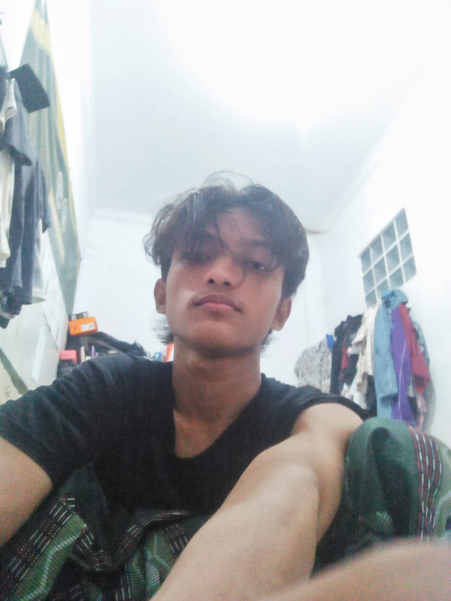

Chatbot Analisis Saham + Bandarmology
Aplikasi berbasis Streamlit untuk menganalisis saham dengan pendekatan bandarmology dan teknikal. Mengambil data real-time dari yFinance, menampilkan grafik candlestick, MA, volume, dan RSI.

Portofolio personal berbasis GitVitae. Menampilkan identitas, skill, pengalaman trading, dan project-project yang pernah dibuat.
Sebuah kerangka pemikiran personal yang dikembangkan dari pengalaman di bidang psikologi, trading, dan introspeksi diri. Terdiri dari 3 kunci untuk memahami dan mempengaruhi orang lain (bawah sadar, ketakutan, kausal) dan 3 perilaku untuk melindungi diri (self-awareness, detachment, calm).
Mukhlisinniamillah@gmail.com
089678158376
Tenajar lor, Kertasemaya, Indramayu